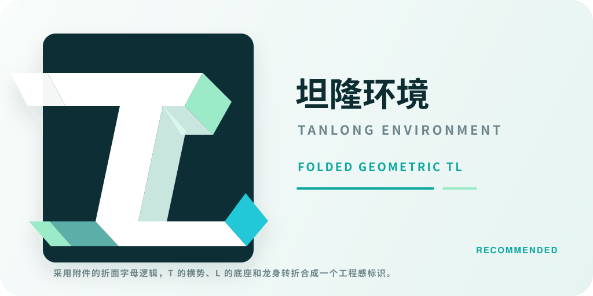
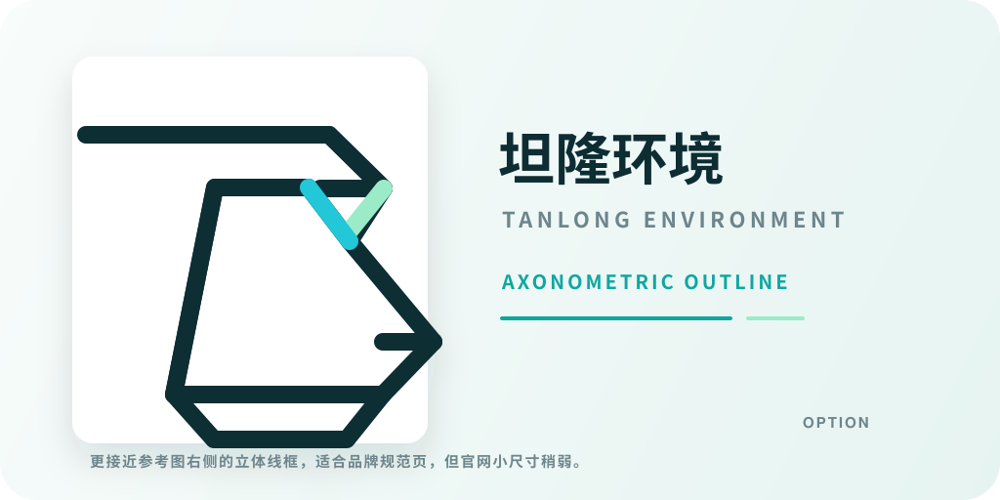
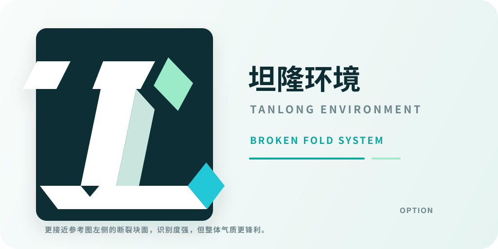
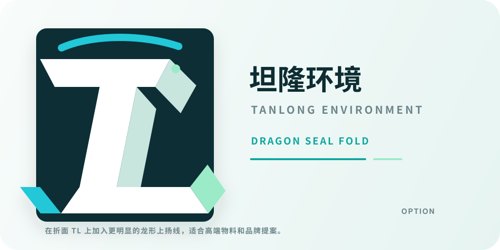
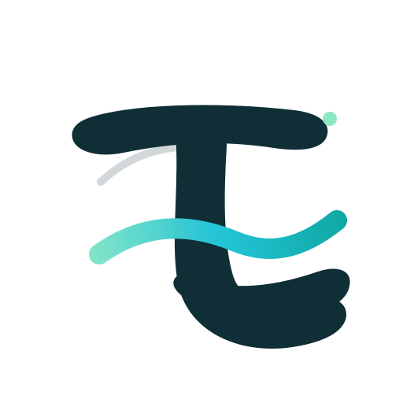

坦隆环境折面 TL Logo
Folded Geometry / 2026-07-04
参考附件的斜向骨架、折纸切面和立体块面，但不复制原图字形。
远看是稳定工程标识，近看能读出 T 的横势和 L 的底座。
青绿切面保留环境、水务和低碳科技感，适合深色官网 Hero。

01 Folded Dragon TL
推荐用于官网。最接近附件的折面逻辑，同时在导航小尺寸下仍能读出 TL。

02 Prism Line TL
备选方向，用于比较线框感、断裂感和龙形意象的强弱。

03 Segmented TL
备选方向，用于比较线框感、断裂感和龙形意象的强弱。

04 Seal Fold TL
备选方向，用于比较线框感、断裂感和龙形意象的强弱。

96px
64px
32px
16px